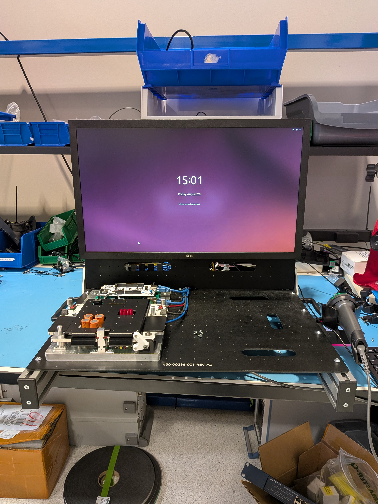
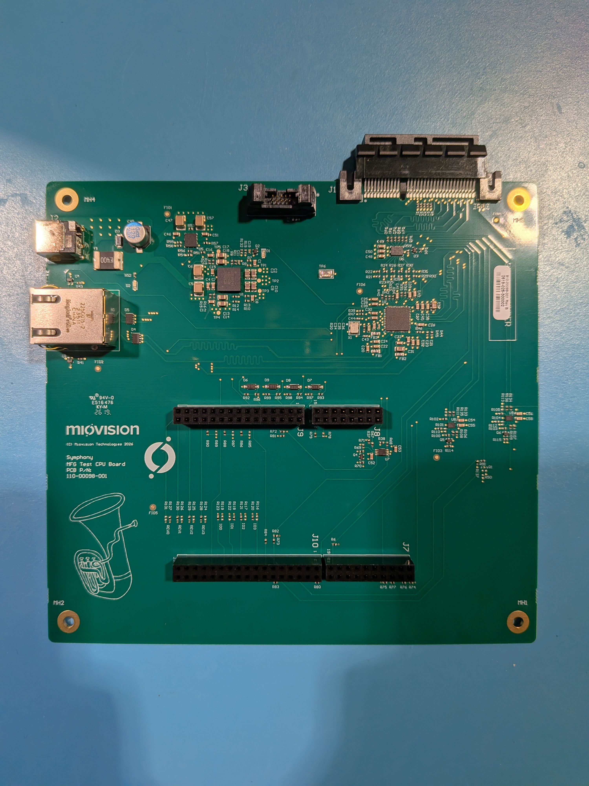
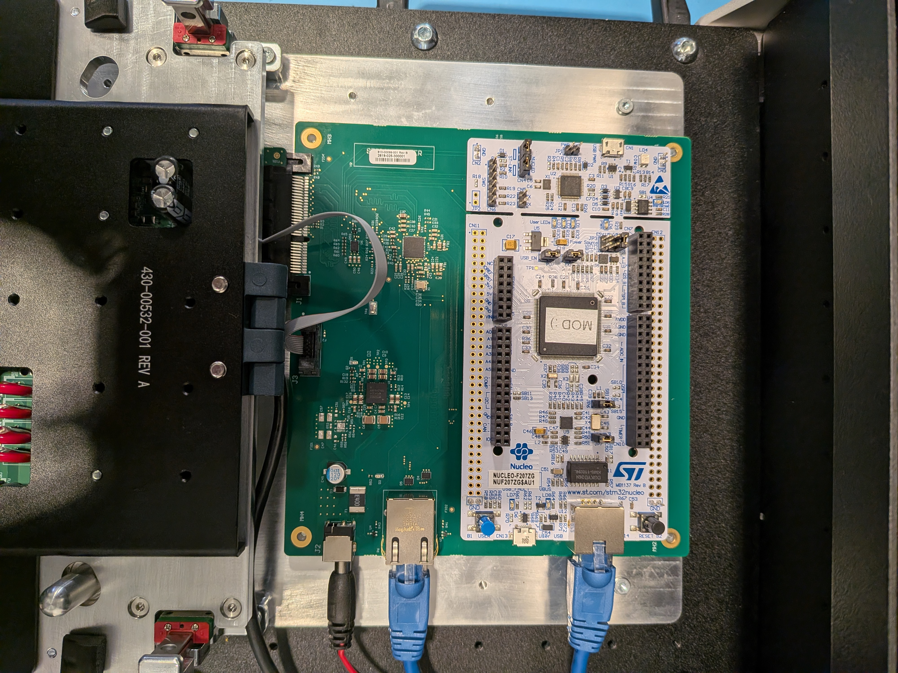
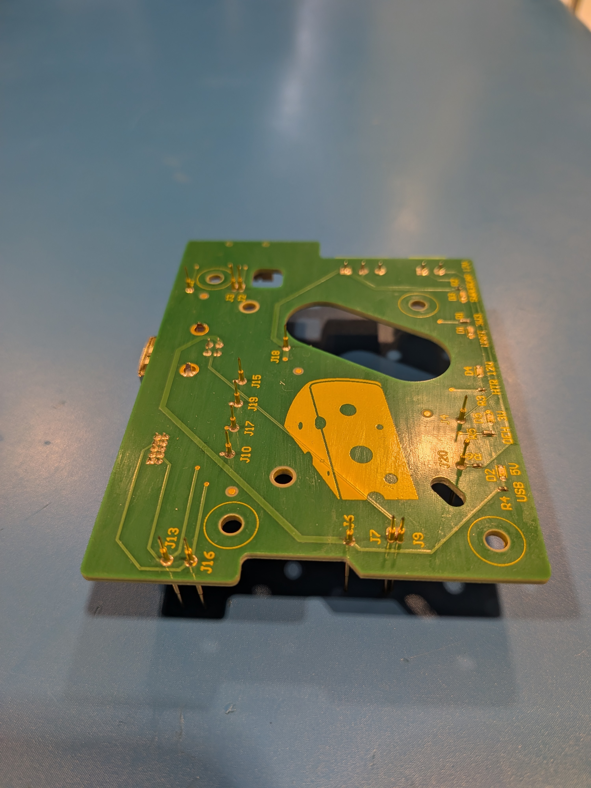
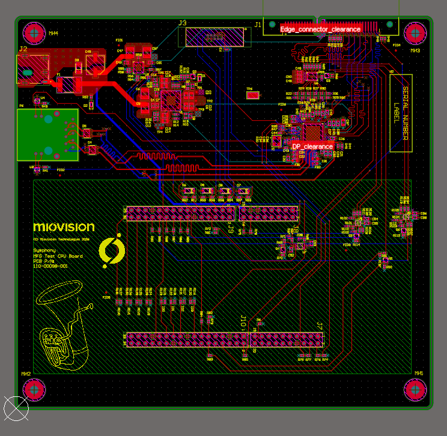

Shaelyn McBride
Electrical hardware designer
01 / Selected Work
Things I've built

Miovision - Test Fixture
2026During my 8 month term with Miovision, I had the opportunity to work on brand new test fixtures to be used for an upcoming product cycle. Working closely with the mechanical and firmware teams, I assembled, tested, and debugged our two fixtures. Before my term ended, I had the opportunity to travel to Miovision's contract manufacturer with my team, where we deployed one of our fixtures. Onsite, we ran into some issues while flashing boards through the fixture. I was able to root cause an issue with the debugging test setup, which allowed for the eventual diagnosis of a minor firmware issue. After this was rectified, the fixture was fully functional. Throughout this process, I was also responsible for the creation of a BOM for both fixtures. I sourced and documented parts from various suppliers in order to recieve all fixture parts in-house under a tight deadline.


Miovision Test Fixture - Main Test Board
2026I was able to complete partial schematic design and full layout design for the main board of both test fixtures. On both fixtures, this common (with variations) board tests ethernet communication, key power rails, and GPIOs on the DUT. After going through a full design review process, I handled communication with fabrication and assembly contractors, completing the full DFM process. Once the boards were recieved, I conducted full bring-up on both variants. I created spreadsheets for my SI/PI investigations, ensuring that the correct datasheet specifications were met, and tested/documented all necessary modificatons. I also debugged RGMII timing issues, working closely with the Firmware team to re-program the test board PHY via the STM32 development module, overall improving iperf3 performance.

Miovision Test Fixture - Pogo-pin Boards
2026I completed full schematic and layout design for the pogo-pin board to be used on each fixture. These boards were used in a bed-of-nails configuration, so that lowering the DUT onto them would form connections that allowed certain power rails and GPIOs to be tested/controlled, and for UART and USB communication to be enabled. Due to the chosen pogo-pins having long stubs, I de-risked USB 2.0 communication using both transmission line theory calculations and a prototype of the intended configuration. After the design was complete, I communicated with fabrication contractor to order the boards. Due to the delicate nature of the pogo-pins, I assembled the boards myself in order to avoid damage during transport. I also handled board bring-up and fixture integration testing. Last but not least, I know the burning question on everyone's mind is: why the heck is there a picture of cheese on this board? It is affectionately known as the 'swiss cheese board' due to its impressive number of holes! The large slot was initially meant to be two holes as well, which made it look even more like cheese.

Miovision Test Fixture - Light Sensor Board
2026I completed schematic and layout design for the light sensor board, which detects LED intensity and colour on the DUT for one of the test fixtures. I was responsible for ordering and assembling these boards.
Miovision Test Fixture - Interposer Boards
2026I completed schematic and layout design for the interposer boards, which interface between the test board and the board-to-board connector for the DUT. These boards were meant to be disposable, in order to avoid replacing the main test board after the board-to-board connector had met its insertion cycle rating. I handled ordering, assembling, and testing these boards as well.
Aversan - ADC Circuit Design Prototype
2024During my 4 month term at Aversan, I worked on a circuit design project where I was tasked with digitizing an analog water level signal for a Water Drop Control Unit. I designed a method of translating this differential analog value into a definitive ON/OFF state using a two-stage op-amp configuration, with a third zener diode voltage regulation stage. After the design was complete, I ordered the necessary components and breadboarded the project.
Capstone Design Project - Agentic Pen
2026I completed preliminary electrical schematic design and prototyping for my team's fourth year design project at the University of Waterloo. We are creating an agentic pen that can recognize handwriting, identify to-do list, calendar, or key idea items, and execute tasks for the user. For example, if I write a jot note that says "meeting tomorrow at 2pm with Alice and Bob", then the pen will stream this data to my device, which will execute the creation of a calendar item for the meeting.
Here's a bit about me:
If I'm not working on a hardware problem, I'm probably playing/watching hockey (go Habs go!), taking a spin class, painting, reading, or taking an absurd amount of pictures of my dog and two cats. I'm easygoing, easy to work with, and great at interpereting / anticipating what needs to be done for a given project. One piece of feedback I've received consistently is that I'm great at knowing when to ask questions, and when to dig into something on my own. Even if I'm not the most experienced applicant on your list, I'd love the chance to show my work ethic and ability to learn quickly! I never turn down a challenge.
Email MeHave something worth building?
I'm always open to discussing new opportunities or collaborating on interesting hardware/software problems.
Email Me